Wadowice · od 1998 roku
Osłaniamy to, co dla Ciebie ważne
Rolety, żaluzje, plisy, moskitiery, markizy i karnisze - mierzone, produkowane i montowane pod Twoje okno. Przyjeżdżamy z próbnikami, mierzymy i podajemy cenę. Bezpłatnie.
Jakość, na którą możesz liczyć!

w Wadowicach
- Najpierw cenadopiero potem pomiar
- Montaż własną ekipą, bez podwykonawców
- Gwarancja na wyrób i montaż
- Osłony na wymiar, karnisze od ręki
Oferta
Dwanaście sposobów
na Twoje okno
Od prostej rolety materiałowej po rolety zewnętrzne sterowane z telefonu. Nie wiesz, co wybrać? To normalne - po to przyjeżdżamy z próbnikami.

Rolety materiałowe
Rolety tekstylne produkowane pod wymiar okna - od lekkich tkanin rozpraszających światło po pełne zaciemnienie BLACKOUT, z montażem na ścianie, suficie lub skrzydle.
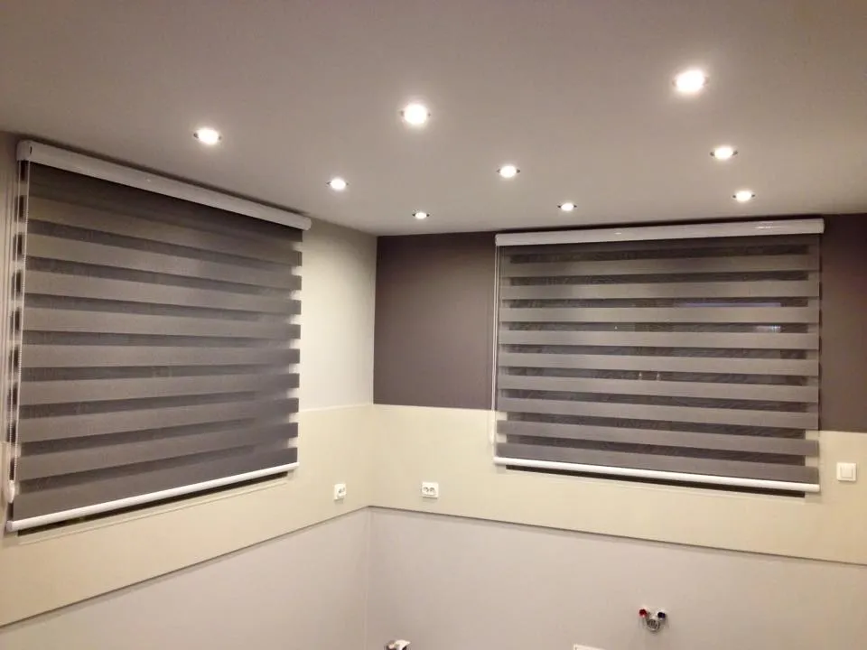
Rolety dzień/noc
Tkanina z naprzemiennymi pasami przezroczystymi i nieprzezroczystymi, którą przesuwasz łańcuszkiem - od pełnego światła, przez delikatne prześwitywanie, po zasłonięte okno.
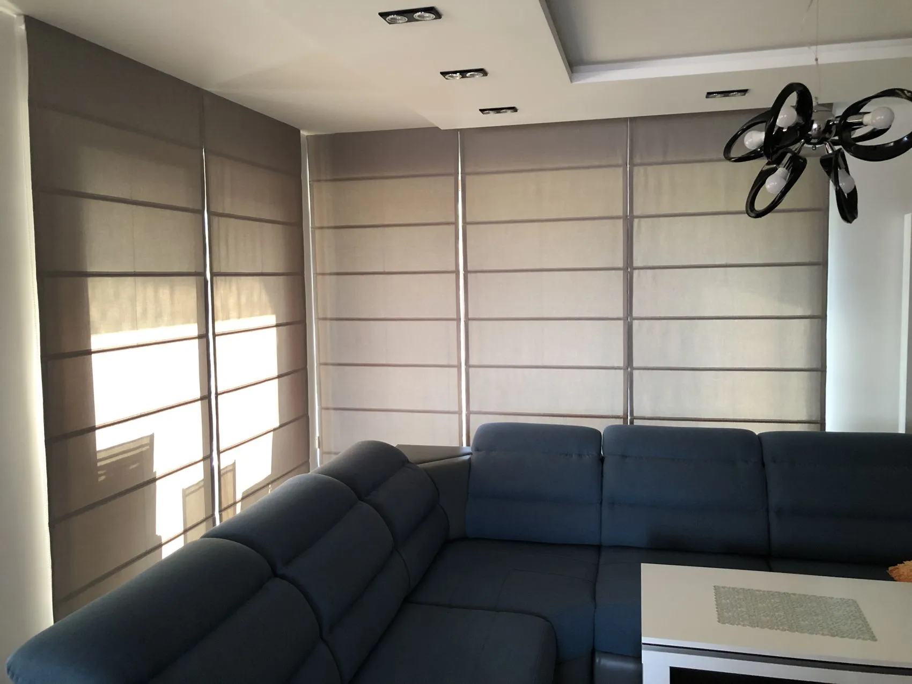
NowośćRolety rzymskie
Dekoracyjna roleta z miękkiej tkaniny, która przy podnoszeniu układa się w równe poziome fale i zastępuje firanę lub zasłonę.
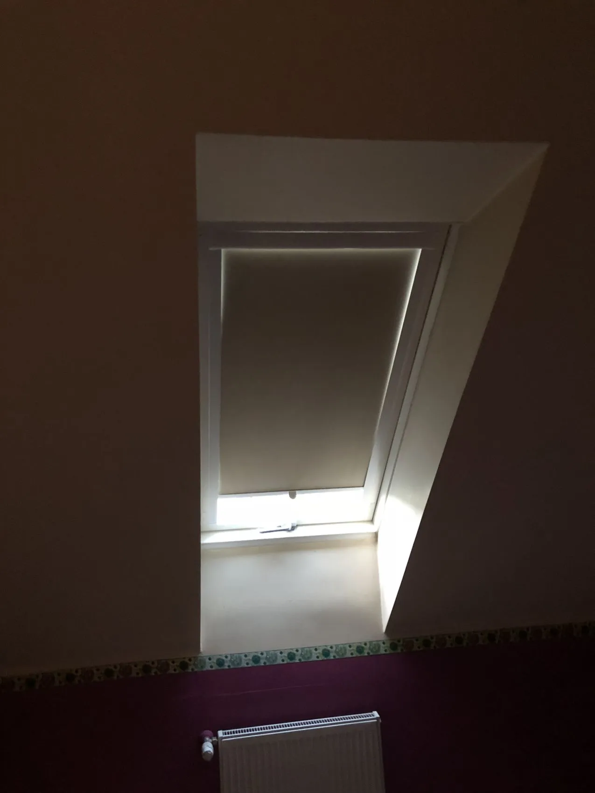
Rolety dachowe
Rolety dopasowane do okien połaciowych Velux, Fakro i Roto, z prowadnicami bocznymi oraz tkaninami zaciemniającymi lub termicznymi.
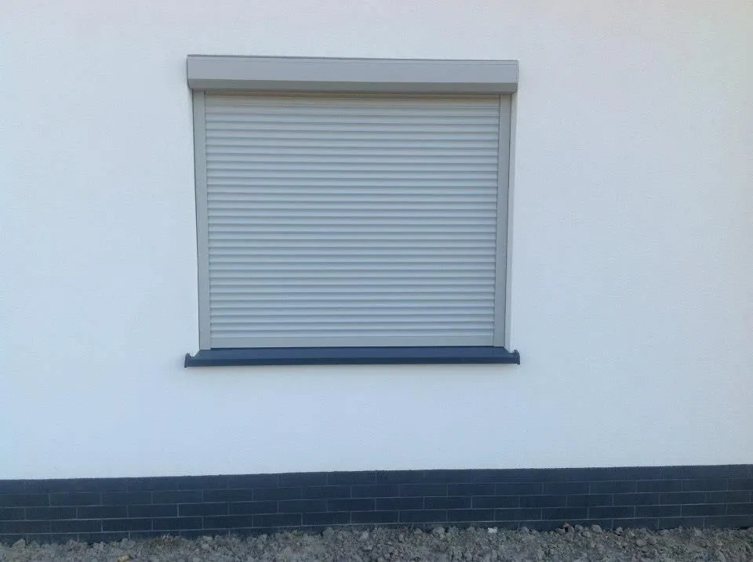
Rolety zewnętrzne
Aluminiowe rolety zewnętrzne na profilach Aluprof, ze sterowaniem ręcznym lub napędem Somfy, z bezpłatnym pomiarem i montażem u klienta.

Plisy
Plisowana tkanina prowadzona w listwach - zasłania okno od dołu, od góry lub w wybranym miejscu, także w oknach nietypowych.

Żaluzje poziome
Klasyczne żaluzje aluminiowe na wymiar, które płynnie regulują ilość światła i dają pełną kontrolę nad prywatnością w każdym pomieszczeniu.
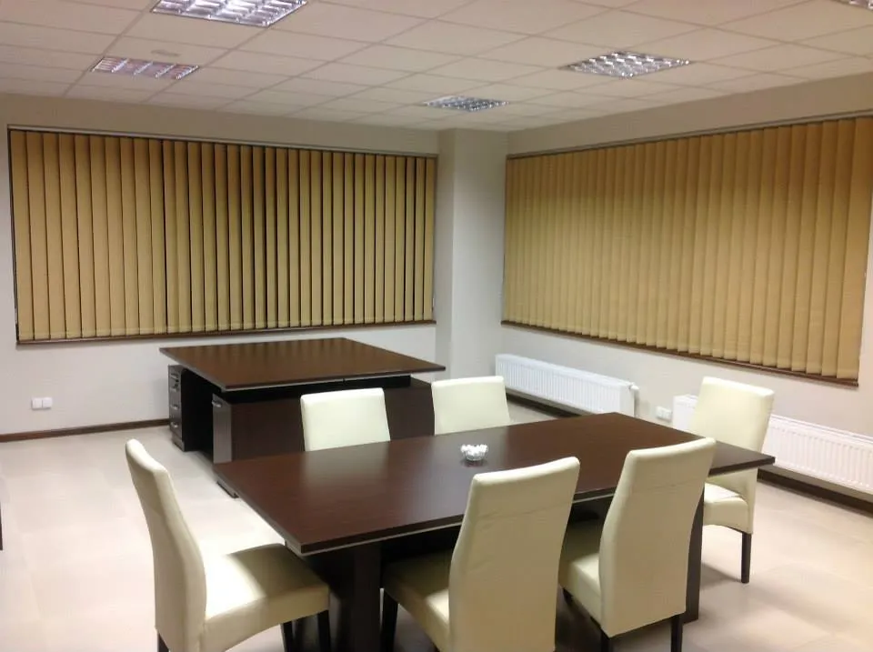
Żaluzje pionowe
Pasy tkaniny o szerokości 89 lub 127 mm, które obracają się i przesuwają, dając kontrolę nad światłem w dużych przeszkleniach.
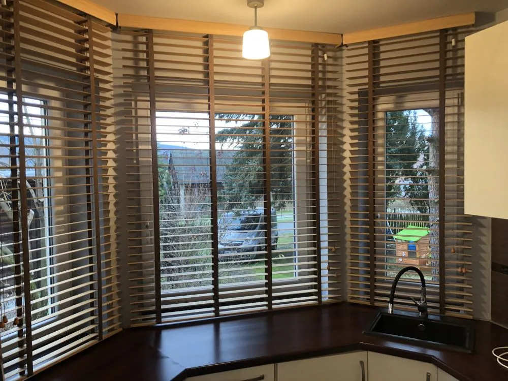
Żaluzje drewniane
Lamele z litego drewna lub bambusa na taśmie drabinkowej, które ocieplają wnętrze i dają miękkie, przefiltrowane światło.
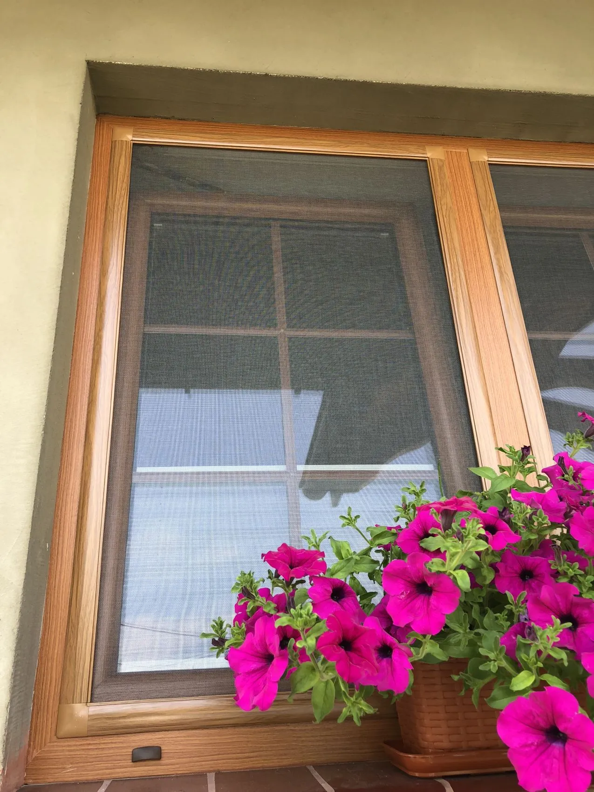
Moskitiery
Moskitiery ramkowe, rolowane i drzwiowe na wymiar, z siatką standardową, antypyłkową lub odporną na pazury kota.
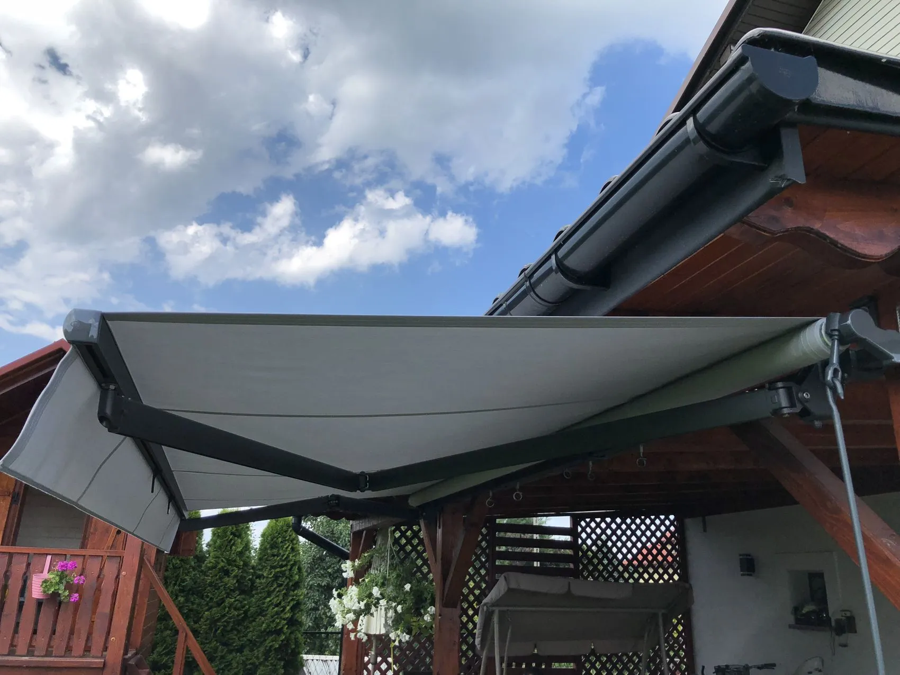
Markizy
Markizy kasetowe, półkasetowe i otwarte z tkaninami akrylowymi, sterowane korbą lub silnikiem Somfy, z pomiarem i montażem na miejscu.

Karnisze
Karnisze metalowe i szyny sufitowe w gotowych wariantach - pomagamy dobrać je do wysokości pomieszczenia, ciężaru firan i sposobu montażu.
Jak pracujemy
Od telefonu
do zamontowanej rolety
Sześć kroków, jeden rozmówca. Ta sama osoba, która mierzy Twoje okna, wraca potem na montaż - nie musisz niczego tłumaczyć dwa razy.
- 01
Telefon lub formularz
Dzwonisz albo zostawiasz zgłoszenie. Pytamy o liczbę okien, rodzaj budynku i to, co ma być rozwiązane - zaciemnienie, upał, prywatność czy owady.
- 02
Widełki cenowe bez wizyty
Na podstawie zdjęć i przybliżonych wymiarów podajemy przedział cenowy telefonicznie albo mailem. Nic to nie kosztuje i do niczego nie zobowiązuje - od razu wiesz, czy rozmawiamy o tym samym budżecie.
- 03
Pomiar u Ciebie
Po akceptacji widełek przyjeżdżamy z próbnikami tkanin, lameli i profili. Mierzymy okna i bierzemy na siebie odpowiedzialność za dopasowanie, a po wizycie dostajesz konkretną kwotę na piśmie - z montażem, bez dopłat na koniec.
- 04
Produkcja na wymiar
Zamówienie trafia do produkcji. Termin podajemy przy jego składaniu, a o gotowości informujemy telefonicznie i umawiamy montaż.
- 05
Montaż i sprzątnięcie
Montuje ta sama osoba, która robiła pomiar. Po pracy sprzątamy stanowisko i pokazujemy, jak obsługiwać osłony.
- 06
Gwarancja i serwis
Gwarancja obejmuje wyrób i nasz montaż. Drobne usterki naprawiamy na miejscu, pojedyncze elementy wymieniamy bez wymiany całości.
Dlaczego DOMAX
Lokalna firma,
która zostaje na lata
Działamy w Wadowicach nieprzerwanie od 1998 roku. Nie znikamy po sezonie - jeśli za pięć lat trzeba będzie wymienić jedną lamelę albo dorobić drugi karnisz do kompletu, wiesz, gdzie zadzwonić.
Jeden wykonawca, nie pośrednik
Doradztwo, pomiar, zamówienie i montaż robimy sami. Nie przerzucamy Cię między firmami, gdy coś trzeba poprawić.
Marki, które znamy od lat
Pracujemy na systemach Selt, Dekorama, Aluprof, Somfy. To nie przypadkowi dostawcy - do ich elementów mamy dostęp także po latach.
Salon, do którego można przyjść
Przy ul. dr J. Putka 9 zobaczysz tkaniny, lamele, profile i końcówki na żywo - a nie tylko na zdjęciu w katalogu.
Serwis po sprzedaży
Wymieniamy pojedyncze elementy zamiast całych osłon. Naprawiamy też rzeczy kupione u nas dawno temu.
Realizacje
Zrobione u sąsiadów
Kilkadziesiąt okien rocznie w Wadowicach i okolicznych gminach. Zobacz, jak wygląda to samo rozwiązanie w różnych wnętrzach.
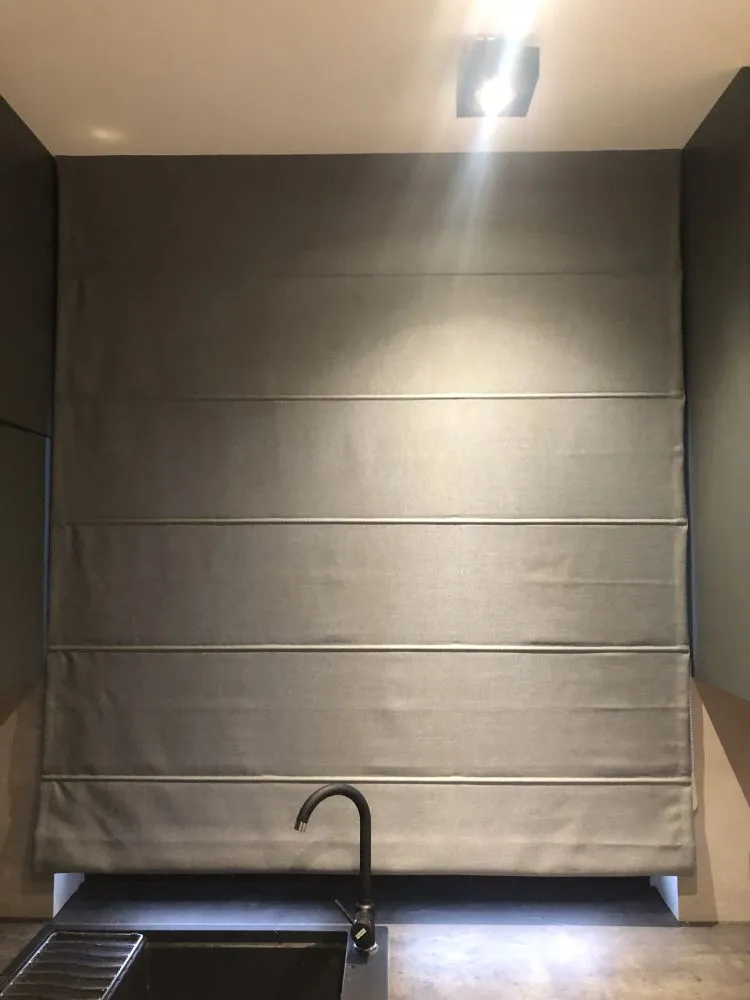
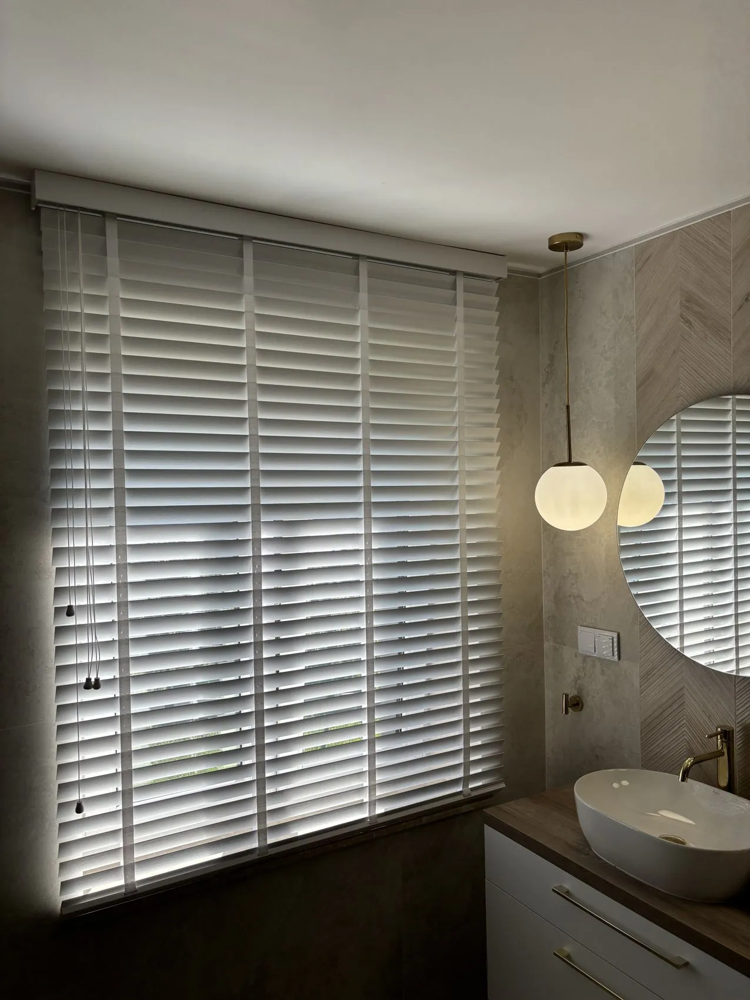

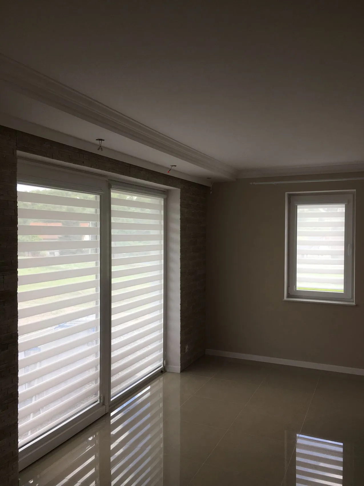
Obszar działania
Dojeżdżamy
do Ciebie
Wadowice i gminy dookoła. Dojazd na pomiar jest bezpłatny - także wtedy, gdy zamówienie dotyczy jednego okna.
Pytania i odpowiedzi
Zanim zadzwonisz
Ile kosztuje pomiar i dojazd?
Przy zamówieniu od dwóch okien i w promieniu 20 km od Wadowic - nic. Doradztwo i widełki cenowe są bezpłatne zawsze, także przez telefon. Przy pojedynczym oknie albo dalszym dojeździe pobieramy 100 zł, które w całości odliczamy od wartości zamówienia, więc przy decyzji o zakupie pomiar i tak wychodzi za darmo.
Na jakim terenie działacie?
Wadowice i okolice: Andrychów, Kalwaria Zebrzydowska, Brzeźnica, Zator, Maków Podhalański, Sucha Beskidzka oraz miejscowości leżące po drodze. Jeśli mieszkasz nieco dalej, zadzwoń - zwykle da się to pogodzić z innym wyjazdem w tamtą stronę.
Czy poznam cenę, zanim ktoś do mnie przyjedzie?
Tak i tak wolimy zaczynać. Wystarczy zdjęcie okna i zmierzona zwykłą miarką szerokość oraz wysokość - na tej podstawie podajemy widełki cenowe przez telefon albo mailem. Dopiero jeśli przedział Wam odpowiada, umawiamy pomiar. Nikt nie traci czasu na wizytę, po której okazuje się, że rozmawialiśmy o innych kwotach.
Czy przyjeżdżacie z próbnikami?
Tak. Na pomiar zabieramy próbniki tkanin, lameli i profili, bo kolor oglądany przy Waszym oknie, ścianie i podłodze wygląda inaczej niż w katalogu. Jeśli decyzja wymaga zastanowienia, próbki zostawiamy na kilka dni.
Jak długo czeka się na realizację?
Osłony powstają na wymiar, karnisze mamy w gotowych zestawach. Karnisz z popularnej serii wydajemy zwykle od ręki, moskitiery robimy w kilka dni roboczych, rolety wewnętrzne i żaluzje od kilku do kilkunastu dni, a rolety zewnętrzne i markizy - kilka tygodni. Konkretny termin podajemy przy składaniu zamówienia.
Czy mogę zobaczyć materiały przed decyzją?
Tak, na dwa sposoby. Możesz przyjść do salonu przy ul. dr J. Putka 9 w Wadowicach albo poczekać na pomiar - przywozimy próbniki do domu, bo kolor przy Twoim oknie wygląda inaczej niż w sklepie.
Co obejmuje gwarancja?
Wyrób, mechanizm i wykonany przez nas montaż. Serwisujemy też rzeczy kupione u nas wcześniej - często wystarczy wymiana pojedynczego elementu zamiast całej osłony.
Wycena w 3 krokach
Powiedz, co masz za oknem
Wypełnienie zajmuje minutę. Oddzwaniamy w godzinach pracy i podajemy widełki cenowe - jeszcze zanim ktokolwiek do Ciebie przyjedzie.
- Najpierw cena - widełki przez telefon, bez wizyty i bez opłat
- Potem pomiar - umawiamy go dopiero, gdy przedział Ci odpowiada
- Bez niespodzianek - kwota po pomiarze zawiera montaż
Pomiar jest bezpłatny przy zamówieniu od dwóch okien i w promieniu 20 km od Wadowic. Przy pojedynczym oknie albo dalszym dojeździe pobieramy 100 zł, które w całości odliczamy od wartości zamówienia.